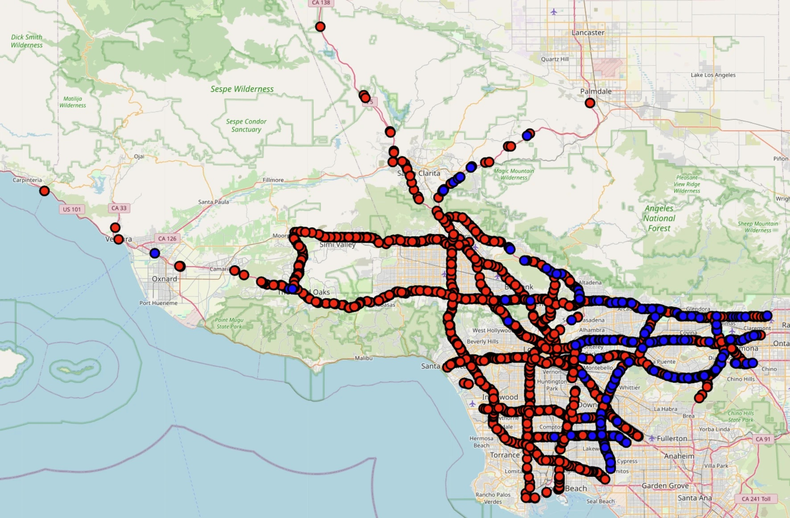

HALT: Human-in-the-Loop Data Acquisition for Supervised Traffic Causality Discovery
SIGSPATIAL 2026 Research Track
Building on our team’s supervised, event-based traffic causality discovery algorithm NEXICA, this work targets its main bottleneck: choosing which labels to propose for traffic experts to review so the model learns as efficiently as possible. We combine model uncertainty with expected accuracy change to suggest the most valuable event pairs, and wrap this in a review loop where experts examine and mark them. On real-world traffic data with heuristic ground-truth labels, the method stays state of the art on multiple accuracy metrics against existing causality discovery algorithms and active learning strategies.